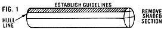

[1] Carter, Tait, and a friend flatten the canoe's bottom. [2] Carter chops away the first chunk from the log's ""top"" and . . . [3] pries out a large section. [4] With the waste wood removed, Earl uses an ax to shape the prom and [5] hollow out some of the interior. [6] While Tait sculpts the sheer line with a curved knife, Carter rough-shapes the hull. [7] A broad adz is ideal for contouring large areas. [8] By working carefully and slowly, the two craftsmen gradually coax the canoe's graceful shape from the cedar.